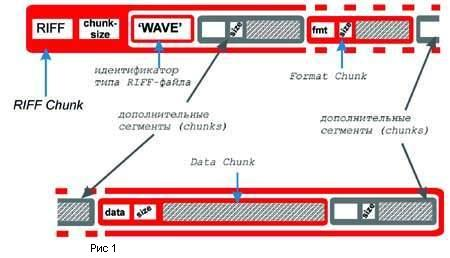
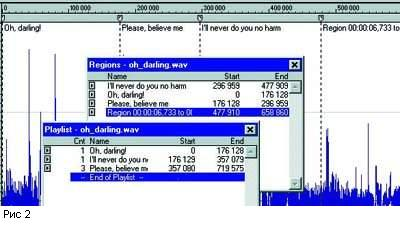
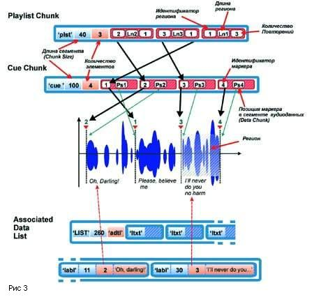
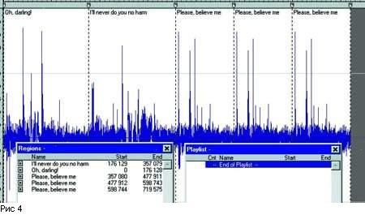
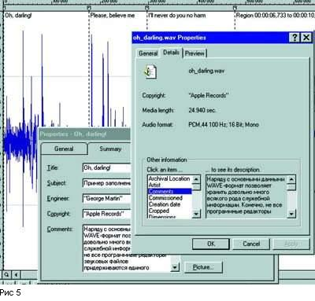

Форматы звуковых файлов, часть 3
Сергей Батов
В предыдущей части мы рассмотрели, как представляются аудиоданные
в файлах WAV и RAW. Попытаемся теперь дать описание формата WAVE
в целом. Как уже было замечено ранее (см. "Звукорежиссер" 8), главной
структурной единицей, "строительным блоком" WAV-файлов, являются
так называемые chunks ("сегмент"). Напомню, что chunk начинается
с четырехсимвольного идентификатора (например 'RIFF', 'fmt ' или
'data'), за ним следует четырехбайтовое число, в котором записано,
сколько байтов занимает данный сегмент (исключая первые восемь байтов
заголовка), а далее располагается его содержимое.

Несмотря
на такое внешнее единообразие, сегменты могут иметь совершенно разное
функциональное предназначение, и оно полностью определяется тем
самым идентификатором, с которого начинается сегмент. В целом же
структура WAV-файла такова. Сам файл, с точки зрения структуры,
тоже является сегментом, именуемым RIFF Chunk. Чтобы определить
характер RIFF-файла, необходим идентификатор типа, в данном случае
это будет 'WAVE'. Далее следуют разного рода сегменты, среди которых
обязательно должны присутствовать Format Chunk (сегмент формата)
с идентификатором 'fmt ' и Data Chunk (сегмент данных) с идентификатором
'data'. Наличие иных сегментов считается необязательным. На рисунке
1 необходимые элементы обозначены красным цветом, а необязательные
- серым.

Еще
одно требование состоит в том, что сегмент формата (Format Chunk)
непременно должен размещаться перед сегментом данных (Data Chunk),
при этом допускается наличие других сегментов между этими двумя.
Существует довольно много разновидностей необязательных или дополнительных
сегментов, а придумать можно, наверное, и еще больше. Формат не
препятствует тому, что кто-то изобретет собственный, возможно только
одному ему нужный сегмент и поместит его внутрь WAV-файла. Порой
так и случается. Эта ситуация дает лишний повод для язвительных
замечаний по поводу Microsoft и всего того, что с ней связано. Кто-то
называет формат WAV "незаконнорожденным" или сравнивает с супом,
который готовили сразу несколько поваров, не согласовавших друг
с другом вопрос об ингридиентах.

Однако
здесь нет серьезной проблемы, ибо существуют четкие рекомендации
разработчикам, создающим программы для работы с WAV-файлами. Непременной
считается способность программы воспринимать сегменты Format Chunk
и Data Chunk. Сегменты же, неизвестные данной программе, должны
допускаться (не приводить к состоянию ошибки или аварийного завершения)
и игнорироваться. Иными словами, "делай то, что умеешь" и "не узнал
- пройди мимо". При операциях копирования файлов нераспознанные
сегменты должны быть в точности сохранены. Вряд ли есть смысл перечислять
все мыслимые и немыслимые виды дополнительных сегментов, однако
некоторые из них стали общеупотребимыми и укоренились в качестве
некоего фактического стандарта.
Вот несколько примеров.
Маркеры и регионы

Большинство
программных аудиоредакторов предусматривают возможность расставлять
в произвольных позициях файла метки, или маркеры. При желании область
между двумя соседними маркерами может быть оформлена как регион.
Это полезная и удобная функция: регион выделяется щелчком мыши и
редактируется независимо от остальных частей, его можно бесконечно
проигрывать в режиме повтора и т.д. Кроме того, регионы с указанием
числа повторений можно в произвольном порядке прописать в реестре,
который называется Playlist (плей-лист, список воспроизведения).
Если активизировать проигрывание через плей-лист, то мы услышим
фрагменты, в точности соответствующие указанным в реестре регионам
и порядку их задания.
Такой метод редактирования называется неразрушающим или недеструктивным,
потому что исходный файл не претерпевает никаких изменений. Всевозможные
операции монтажа можно производить исключительно путем манипуляций
с маркерами и регионами. Особенно заметны преимущества недеструктивного
редактирования там, где необходимы операции копирования (Copy) и
вставки (Paste). Например, при перестановке больших фрагментов это
может сэкономить много времени и нервов.
Естественно, маркеры и регионы могут служить для совершенно разных
типов задач. Очень часто их применяют для "мелких" или "тонких"
вещей вроде подготовки и редактирования семплов с петлями (loops)
для wavetable-синтезаторов или семплеров. Возможно решение и "макрозадач",
когда, скажем, надо переписать материал из пятнадцати песен с DAT-кассеты
на жесткий диск. Вместо того, чтобы записывать каждое произведение
в отдельный файл, можно за один заход переписать их все вместе,
а затем составить плей-лист с указанием желаемого порядка следования
фрагментов (то есть песен). А лишний час свободного времени - не
пустяк.

Очень
важно то, что "семь раз отмерив" (или сто семьдесят семь), мы можем
и "отрезать", то есть создать новый файл, состоящий из регионов,
указанных в плей-листе с учетом порядка следования и количества
повторений. В программе Sound Forge, например, это делается операцией
преобразования в новый файл (Convert to New).
Если же мы хотим сохранить исходный файл с намерением впоследствии
продолжить операции с маркерами, регионами и плей-листом, то в нем
обязательно появятся новые сегменты. Возьмем для примера короткий
фрагмент, в котором легко выделить три вокальные фразы из песни
Леннона и Маккартни "Oh, Darling" (Рис.2). Вполне естественно поставить
первую метку (маркер) перед началом второй фразы (Please, believe
me), хотя можно было бы начать и с первой фразы, - это не имеет
значения. Выделив кусок между началом фрагмента и первым маркером,
можем превратить его в регион, при этом в самом начале автоматически
появится второй маркер.
Sound Forge по умолчанию присваивает региону название, в котором
фигурируют позиции начала и конца региона, заданные в тех единицах,
которые мы сочтем наиболее для себя удобными (параметр Input format).
Если будет желание продолжить экскурс вглубь файла с шестнадцатиричным
редактором в руках, то лучше выбрать Samples, тогда будет проще
сверяться с таблицами Sound Forge.
Для наглядности мы переименуем регион в "Oh, Darling!", а упомянутые
значения позиций всегда можно посмотреть, открыв Playlist и Regions.
После этого ставим маркеры в начале и в конце третьей фразы и аналогичным
образом даем названия двум новым регионам. Теперь, чтобы понаблюдать,
как работает Playlist, зададим в нем какой-нибудь нелепый порядок
следования регионов. Для этого надо в табличке Regions выделять
желаемый регион, а в Playliste давать команду Add. В нашем примере
сначала проигрывается первая фраза, затем третья, а после - вторая,
причем три раза подряд, а исходный файл после сохранения обогатится
следующими сегментами.
| Таблица
1 |
| Идентификатор
формата |
Способ представления
аудиоданных |
| 1h |
PCM |
| 2h |
Microsoft
ADPCM |
| 3h |
PCM, формат
с плавающей запятой |
| 6h |
A-law |
| 7h |
u-law |
| 11h |
IMA ADPCM |
| 12h |
Mediaspace
ADPCM (Videlogic) |
| 13h |
Sierra ADPCM |
| 20h |
Yamaha ADPCM |
| 55h |
MPEG |
Будет заведен Cue Chunk (сегмент контрольных точек-маркеров), содержащий
информацию о созданных нами маркерах. Он состоит из заголовка с
идентификатором 'cue' и последовательности элементов, каждый из
которых описывает определенный маркер, или теперь уже - cue point,
как принято выражаться в терминах структуры файла..
Элементы, помимо прочего, содержат идентификатор маркера и позицию
(буквально - номер отсчета) в массиве аудиоданных (сегмент Data
Chunk). Заметим, что идентификатор маркера - это фактически его
номер, но не по порядку следования при простом проигрывании файла,
а по порядку создания. В нашем примере маркер, стоящий как бы вторым
от начала, имеет идентификатор "1", потому что он был создан первым
(см. рис.3).
Сам плей-лист реализован в сегменте Playlist Chunk. Это последовательность
элементов, описывающих регионы в том порядке, в каком мы их задали
в плей-листе. Идентификатор региона совпадает с идентификатором
маркера, который служит началом региона. Схема работы этой замысловатой
кухни представлена на рис. 3. Ну, а возможность дать наименования
регионам обеспечивается наличием сегмента Associated Data List;
идентификатор в заголовке - 'LIST', а сразу после размера сегмента
стоит идентификатор типа 'adtl'.
Как будет видно из дальнейшего, может быть несколько сегментов
с идентификаторами 'LIST', но с разными идентификаторами типов.
Это chunk более сложной структуры, ибо в него входят другие сегменты
(пример вложенности, о которой говорилось в первой части статьи).
Label Chunk (сегмент имени), являясь одним из таких вложенных сегментов,
или подсегментов (sub-chunk), состоит из идентификатора 'labl',
четырехбайтового числа, в котором указан размер сегмента, цифрового
идентификатора и "человеческого" текстового наименования региона.
Associated Data List, естественно, не влияет на работу самого плей-листа,
которая происходит по схеме: Playlist Chunk => Cue Chunk => аудиоданные
(Data Chunk).
Файл, в который можно преобразовать плей-лист посредством команды
Convert to New, показан на рисунке 4. В отличие от исходного, он
состоит только из тех регионов, что были указаны в плей-листе (сравните
таблички Regions на Рис. 2 и Рис. 4), а новый Playlist будет пустым.
Сопутствующая информация
Наряду с основными данными WAVE-формат позволяет хранить довольно
много всякого рода служебной информации. Конечно, не все программные
редакторы звуковых файлов придерживаются единого стандарта на этот
счет, а необязательные с точки зрения формата сегменты, несущие
подобного рода информацию, будут, пожалуй, самыми необязательными
из всех. И все же при оценке того или иного формата возможность
снабдить файл дополнительной информацией рассматривается подчас
не менее серьезно, чем количество каналов или число байт в представлении
аудиоданных. Чтобы присоединить к файлу специальную информацию,
нужно заполнить поля в формах, предлагаемых аудиоредакторами. По
названиям полей, как правило, нетрудно догадаться, что именно надлежит
туда вписать:
Title (название), Subject (описание содержания), Engineer (инженер),
Comments (комментарии), Artist (исполнитель), Copyright (авторские
права), Creation Date (дата создания), Genre (жанр) и т.д. Внутри
же WAV-файла эта информация будет существовать в виде сегмента с
идентификатором 'LIST' в заголовке (см. Рис. 3 и комментарий к нему),
после которого идет традиционный четырехбайтовый размер сегмента
(Chunk Size), а за ним - идентификатор типа 'INFO'. Таким образом
программа сможет отличить, к чему будут относится текстовые фрагменты
из следующих далее подсегментов (sub-chunks), - к названиям регионов
в плей-листе или к информации об исполнителях и авторских правах,
как в рассматриваемом случае.
Сегменты, вложенные в LIST Chunk типа INFO, устроены совсем просто.
Четырехбайтовый идентификатор сегмента точно соответствует полю,
которое он описывает, например: 'IART' - Artist, 'ICMT' - Comments,
'ICOP' - Copyright, 'ICRD' - Creation Date, и т.д. После идентификатора
идет размер сегмента и сам текст. К разговору о стандартах и совместимости:
Sound Forge поддерживает 23 пункта (поля) для сопутствующей информации.
Если набраться терпения и заполнить их, то, открыв в Windows правым
щелчком мыши Properties ("Свойства") файла, под рубрикой "Other
information" можно наблюдать все 23. То есть, фирма Microsoft здесь
добросовестно поддерживает собственный формат (Рис. 5.)
А вот программа Cool Edit Pro отображает лишь пятнадцать из этих
полей, хотя после сохранения файла этой программой те поля, которых
не оказалось в Cool Edit, остаются доступными для Sound Forge. Так
действует принцип корректной работы программы с незнакомыми или
ненужными ей сегментами. Однако та же Cool Edit почему-то не желает
видеть маркеры и регионы, заданные в Sound Forge, в то время как
последняя более терпима и понятлива по отношению к продуктам деятельности
конкурентов.
В добавление к текстовым полям обе программы дают возможность вложить
картинку - небольшой графический файл формата BMP, только совместимость
и здесь будет односторонней. Кстати, раз уж речь зашла об информации,
не относящейся непосредственно к звуку, хотелось бы сказать: несмотря
на то, что текстовые или графические вложения будут восприняты далеко
не всеми программами, такая информация является принципиально открытой
- просмотрев файл шестнадцатиричным редактором, можно выявить практически
все неизвестные сегменты. Понятно, что если информацию нарочно не
прятать, отыскать ее будет возможно.
Однако существуют довольно изощренные методы сокрытия информации,
относящиеся к области стеганографии, когда носителем сообщения служит
не зашифрованный код, а внешне вполне безобидный объект, так что
даже сам факт наличия такого сообщения заподозрить сложно. Например,
изменив оттенки некоторых пикселов графического файла, можно получить
картинку, внешне почти не отличающуюся от исходной, и занимающую
такое же место в памяти, только теперь она будет содержать еще и
закодированный текст.
Впрочем, необязательно именно текст, подобным образом можно "растворить"
абсолютно любой файл, важно лишь, чтобы несущий файл в несколько
раз превосходил вложение по объему, и чтобы небольшие изменения
определенных частей несущего файла не разрушали его логической структуры.
Необъятная по размерам область аудиоданных звукового файла подходит
для таких вещей практически идеально: чуть-чуть изменяя значения
энного количества отсчетов, можно спрятать там и текст, и изображение,
и даже другой звуковой файл!
Хотелось бы еще раз подчеркнуть, что размер файла, несущего скрытую
информацию, останется прежним, а заметить разницу в звучании будет
весьма проблематично. Шпионские страсти здесь, конечно же - ни при
чем. Речь идет не о передаче секретной информации посредством звуковых
файлов (это можно делать гораздо проще), а всего лишь о возможности
защитить авторские права на оригинальный материал, так как подобные
вложения могут с успехом сыграть роль "водяных знаков". В графических
файлах "водяные знаки" применяются уже давно. Соответствующие программы
для звуковых файлов, по крайней мере, существуют, хотя о распространенной
практике говорить не приходится, а уж о стандартах - и подавно.
(В формате SACD применение "водяных знаков" предусмотрено спецификацией
на формат - прим. ред.)
Инструментальные сегменты
Эти сегменты WAV-файла не имеют непосредственного отношения к основной
теме - звукозаписи, но без них картина была бы неполной.
Итак, Sampler Chunk, как можно догадаться из названия, содержит
набор параметров, позволяющих таким инструментам, как MIDI-семплеры,
адекватно использовать содержащиеся в WAV-файле аудиоданные (в этом
случае говорят о wave-формах). Идентификатор сегмента - 'smpl'.
Параметрами, в частности являются: идентификатор семплера, соответствующий
стандарту MMA (MIDI Manufacturer's Association); длительность отсчета
в наносекундах; номер MIDI-ноты, соответствующей wave-форме; параметр
точной подстройки (fine tuning) высоты ноты; формат SMPTE, используемый
для синхронизации; и, естественно, структуры констант, необходимых
для организации петель (loops). Instrument Chunk содержит многие
из перечисленных параметров а, кроме того, номера верхней и нижней
MIDI-ноты из диапазона допустимых для данной wave-формы значений
(для организации мультисемплирования).
Почему-то существует предубеждение, что для инструментальных целей
годится формат AIFF, а WAV - не годится, потому что там "нельзя
задать высоту ноты". Очевидно, что это вовсе не так, а неспособность
какого-либо программного обеспечения работать с WAV-форматом является
проблемой самого программного обеспечения, а не формата.
Сжатие аудиоданных
До сих пор мы рассматривали цифровые аудиоданные, представленные
способом импульсно-кодовой модуляции или PCM (Pulse Code Modulation).
В любом случае цифровой звук представляет из себя некий набор чисел,
а разница между способами представления звука заключается в том,
каков смысл этих чисел. Если мы говорим "PCM", то это означает,
что время звучания разбивается на равные промежутки, зависящие от
частоты дискретизации, а диапазон амплитуды - тоже на равные промежутки,
соответствующие шагу квантования (его величина обратно пропорциональна
разрядности и характеризует точность представления отсчетов). Возникает
пространственно-временная сетка, покрывающая график зависимости
амплитуды от времени, а наши отсчеты будут соответствовать пересечениям
кривой графика с линиями этой сетки. Чем гуще линии сетки, тем точнее
получится картина. Это честная попытка снять кальку с реального
процесса... Как бы там ни было, а ничего более исчерпывающего на
этот счет у нас пока что нет. Поэтому PCM, как наиболее полный источник
информации, будем считать эталоном представления звука. За качество
приходится платить мегабайтами: минута звука стандарта аудио-CD
обойдется прмерно в 10 МБ. Есть сферы применения цифрового звука,
связанные в основном с хранением и передачей, где крайне необходимо
сократить объем данных. Поэтому приходится задуматься о сжатии аудиоданных.
Здесь хотелось бы разобраться с терминологией. Англоязычные источники
используют термин compressed (и uncompressed), говоря об уменьшении
объема любых типов данных, не только звуковых. Если же речь идет
о звуке, у профессионалов слово "компрессия" в первую очередь ассоциируется
с динамическими характеристиками. Поэтому надо оговориться: в рамках
данного изложения термины "компрессированный" и "некомпрессированный"
касаются только уменьшения объемов информации. Теперь о способах.
Распространенные компьютерные архиваторы, наподобие Zip или Rar,
эффективны при сжатии текстовых файлов или исполняемых программных
модулей, но абсолютно бесполезны для звука и ряда графических (растровых)
файлов. Для сжатия звука используются специальные методы, причем
различают сжатие без потерь (lossless), когда компрессированные
данные восстанавливаются с точностью до бита, и сжатие с потерями
(lossy), при котором часть исходной информации утрачивается.
Один из ресурсов уменьшения объема - способ хранения отсчетов.
Если характер данных таков, что разность между двумя соседними отсчетами
невелика, то есть смысл хранить именно эту разность, ибо в этом
случае можно обойтись гораздо меньшим количеством бит. Такой метод
называется DPCM (Delta Pulse Code Modulation). Рассмотривая череду
этих дельт (разностей) на протяжении определенного промежутка времени,
мы можем оптимальным образом их закодировать. Для этого применяется
алгоритм Хаффмана (Huffman), основанный на оценке частоты появления
того или иного значения. Алгоритм Хаффмана позволяет добиться эффективного
сжатия информации и, что самое главное, полного ее восстановления.
Известна программа Shorten для платформ Unix, MS-DOS и Windows,
которая без потерь сжимает WAV-файлы с коэффициентом порядка 2:1
(эффективность сжатия здесь зависит от характера самих аудиоданных:
чем меньше высоких частот, тем лучше сжимается сигнал). Однако эта
программа создает не WAV-файл с компрессированными аудиоданными,
а архив с собственным расширением .shn, который нельзя прослушать
стандартными средствами. Исходный файл восстанавливается из архива
полностью, но лишь с помощью той же самой программы.
Схемы компрессии, которые использует формат WAV, являются сжатием
с потерями. Метод DPCM применяется как разновидность ADPCM (adaptive
DPCM), когда значения разностей подвергаются более грубому квантованию,
что позволяет уменьшить разрядность до четырех бит, причем шаг квантования
выбирается в зависимости от величины текущего изменения сигнала.
Именно в этом заключается "адаптивность", на которую указывает название
метода. Не следует путать этот сугубо математический алгоритм, не
имеющий отношения к психоакустике, со способом сжатия Audio MPEG,
который основан как раз на адаптивных особенностях слухового восприятия.
Коэффициент сжатия 16-битных данных методом ADPCM равен 4:1.
Другой классической схемой компрессии является *-law. Отсчеты амплитуды
кодируются восьмибитными числами, причем шаг квантования не постоянен,
как в PCM, а меняется по логарифмическому закону. Ввиду того, что
значения представлены в формате с плавающей запятой, динамический
диапазон соответствует 12-битному целому формату. У этой схемы есть
разновидность A-law, относящаяся к Европейскому телефонному стандарту.
Так же как и ADPCM, *-law характеризуется различимыми на слух искажениями.
Качественно иные принципы лежат в основе алгоритмов сжатия по стандарту
MPEG (Motion Pictures Experts Group).
Этот метод также является сжатием с потерей информации, и, более
того, его можно было бы назвать "обманом слуха". А по-научному -
это "метод, использующий особенности слухового восприятия". В 1940
году Флетчер (H. Fletcher) опубликовал результаты исследований,
проведенных с большим числом слушателей. Он анализировал зависимость
абсолютного порога слышимости от частоты стимулирующего сигнала.
В выведенной им кривой максимальные значения порога находятся, естественно,
на границах диапазона слышимости, а минимум - приблизительно в районе
5 кГц. Но главное заключается в том, что слуху свойственно адаптироваться
к появлению новых звуков, что выражается в повышении порога слышимости.
Поэтому одни звуки способны маскировать, (то есть делать субъективно
неслышимыми) другие.
Маскирование имеет частотно-динамический аспект (громкие звуки
маскируют близкие им по частоте более тихие, низкочастотные звуки
маскируют высокочастотные) и временной аспект (эффект продолжается
еще некоторое время после того, как маскирующий звук прекратился).
Это дает возможность выделить в исходном сигнале те компоненты,
которые скорее всего не будут восприняты слухом. Как правило, для
этого исходный сигнал разбивается на кадры, которые подвергаются
частотному анализу, причем спектр разбивают на несколько полос (порядка
30). Это также связано с особенностями слуха: в ушной улитке (о
базилярной мембране см. статью И.А. Алдошиной в седьмом номере журнала)
существуют области, каждая из которых отвечает за определенную частотную
полосу (шириной от 100 Гц внизу и до 3500 вверху спектра).
Стандарт MPEG имеет три уровня (Layers). Алгоритм первого уровня
аналогичен методу PASC (Precision Adaptive Subband Coding), применяемому
в системе DDC (Digital Compact Cassete). Наиболее распространен
MPEG Layer 3, в котором усовершенствован частотный анализ - на завершающей
стадии кодирования используется алгоритм Хаффмана. Его коэффициент
сжатия информации составляет около 10:1. По поводу качества звука
есть мнения как ярых сторонников, так и не менее ярых противников.
Во всяком случае, о заметности вносимых искажений так уверенно,
как в случае ADPCM или *-law, не говорится. Известно также, что
качество сжатого сигнала во многом связано с характером исходного.
Сжатые данные в формате WAVE
Как же поддерживает WAVE-формат сжатые (compressed) аудиоданные?
Вынужден вновь сослаться на первую часть статьи, где шла речь о
сегменте формата (Format Chunk).
Это важнейшая часть любого WAV-файла, так как именно там записана
вся информация о том, как понимать цифры сегмента данных (Data Chunk),
содержащего самое главное - оцифрованный звук. Напомню, что после
идентификатора сегмента 'fmt ' располагается размер сегмента, а
за ним - переменная format tag - идентификатор формата. Вот она-то
и командует парадом!
Это лишь несколько примеров из длинного списка форматов представления
аудиоданных (а не форматов звуковых файлов вообще). Как можно заметить,
только для ADPCM существует несколько разновидностей, причем многие
из них несовместимы друг с другом. Естественно, вышеописанные принципы
не исчерпывают всех способов представления данных, к тому же нет
никакой гарантии того, что пока вы читаете эти строки кто-то не
придумал новый алгоритм кодирования и не выбрал для него идентификатор.
Размер сегмента формата (Format Chunk) зависит от значения идентификатора
формата, так как для каждого способа представления аудиоданных могут
потребоваться свои дополнительные параметры (число каналов и частота
семплирования, как правило, присутствуют на тех же местах, что и
в случае PCM).
Кроме этого, после сегмента формата для всех случаев, кроме PCM,
появляется дополнительный сегмент Fact Chunk, содержащий время звучания
аудиоданных, выраженное в семплах.
Однако, наличие идентификатора формата у способа представления
данных - это еще не все. Важно, как он поддерживается программным
обеспечением. В Windows такая поддержка (Audio Compression Management)
организована на уровне системы. В окне "Аудио" панели управления
"Мультимедиа" Windows95/98 можно отыскать список драйверов (служебных
программ) под названием Audio Compression Codecs (программы аудиосжатия),
благодаря которым многие программы, включая стандартный Sound Recorder
("фонограф"), могут работать с компрессированными аудиоданными.
Некоторые драйверы (ADPCM, *-law) уже присутствуют в стандартном
наборе Windows, а другие, скажем, Fraunhofer MPEG Layer 3 Codec,
требуется установить специально. При этом можно конвертировать аудиоданные
WAV-файла в любой сжатый формат, включая MPEG Layer 3, посредством
того же "фонографа". Для этого нужно открыть в меню пункт "свойства".
Заметим, что информация о маркерах, регионах и т.д. для компрессированных
данных полностью сохраняется и может быть использована также, как
и в случае PCM.
Завершая обзор формата WAVE, остается добавить, что сейчас для
него разрабатываются новые стандарты, предусматривающие, в частности,
использование GUID (Global Unique Identificator - своеобразный "инвентарный
номер", с помощью которго Microsoft старается "оприходовать" все
компоненты системы); определенный порядок чередования каналов в
многоканальных файлах, предназначенных для систем объемного звука
(до 18 каналов); введение новых дополнительных сегментов, таких
как Peak Chunk, содержащий информацию о пиках амплитуды (для обеспечения
графического представления или быстрой нормализации), и т.д.
Формат AIFF
Вообще-то, справедливости ради, вначале надо было рассказать именно
об этом формате, ведь RIFF WAVE появился позже и использует основные
идеи AIFF, хотя и в несколько интерпретированном виде.
AIFF (Audio Interchange File Format - формат файлов для передачи
аудио) является развитием фирмой Apple Computer формата IFF, который
был разработан Electronic Arts в 1985 году. Используется большинством
систем обработки звука, работающих на платформе Macintosh,включая
разработки фирмы Digidesign: SoundTools, ProTools и AudioMedia,
а также некоторыми системами для SGI.
Как и WAVE, формат AIFF поддерживается сегодня многими платформами,
включая Windows, где наряду с четырехбуквенным расширением .aiff
в названии файлов используется трехбуквенное. Структура AIFF-файлов
весьма схожа с WAVE: во-первых, она также основана на сегментах,
которые выполняют те же ключевые функции, что и в WAV-файлах, хотя
и называются по-другому (аналогом головного сегмента RIFF WAVE служит
FORM AIFF, сегменту Format Chunk соответствует Common Chunk (идентификатор
'COMM'), а Data Chunk имеет идентификатор 'SSND').
Пожалуй, основным отличием является представление чисел: порядок
следования байтов в AIFF отвечает стандарту big endian (Motorola),
то есть числа надо читать "по-человечески", а не задом наперед.
Это следует иметь в виду, открывая незнакомый файл "с подозрением
на AIFF" в формате RAW, или исследуя его шестнадцатиричным редактором.
Кроме того в AIFF для представления некоторых параметров (например,
частоты семплирования) используются 80-битные числа повышенной точности
с плавающей запятой. Аудиоданные записываются в форме целых чисел
(PCM или *-law), форматы с плавающей запятой не допускаются. Возможно
наличие 1, 2, 3, 4 и 6 каналов, которые размещаются в файле так
же, как и в случае WAVE. Сжатые аудиоданные (*-law, A-law, ADPCM
и др.) поддерживаются специальной модификацией формата AIFC. Можно
использовать маркеры, регионы и плей-лист, хотя их внутренняя структура
не совпадает с WAVE: при конвертировании одного формата в другой
информация такого рода не сохраняется. Ну и, разумеется, существуют
очень удобные "инструментальные" сегменты (Instrument Chunk и MIDI
Data Chunk), благодаря чему AIFF-файлы рассматриваются многими как
единственно пригодные для использования в семплерах и синтезаторах.
Не забыта и служебная информация (Comments Chunk). На мой взгляд,
между обоими форматами есть и некая разница эстетического свойства:
ощущения от чтения документации по AIFF и по WAVE сопоставимы с
впечатлениями от созерцания внутреннего устройства самих Macintosh
и PC.
Перейдем теперь к более специфическим форматам.
Форматы Sound Designer
Фирма Digidesign, производитель систем Sound Tools и Pro Tools,
разработала форматы, именуемые Sound Designer I и Sound Designer
II. Наряду с двумя предыдущими, они входят в класс self-describing
("описывающих сами себя"), так как аудиоданные снабжены информацией,
достаточной для их правильной интерпретации (примером формата другого
рода служит RAW). Документация по формату Sound Designer I утверждает,
что он "широко используется и поддерживается, что доказано большим
количеством CD-ROM-ов со звуковыми эффектами, записанными в этом
формате. Прежде всего он используется для записи монофонических
16-битных аудиофрагментов небольшой (порядка нескольких секунд)
длительности. Этот формат мы рекомендуем применять для коротких
звуков, а формат Sound Designer II - в качестве основного" (Digidesign,
1990).
Формат Sound Designer I предусматривает фиксированный 1336-байтовый
заголовок файла, в котором отведены стандартные поля для частоты
семплирования, размера звукового файла, данных о границах петель
(loop points), поименованных маркеров (числом до десяти). Специальные
поля предназначены для отображения звука на экране редакторами с
графическим интерфейсом (zoom-факторы, масштабы и пр.).
Необходимо сказать пару слов о файлах Macintosh. В большинстве
компьютерных систем файлы представляют из себя логически единый
поток данных. Иерархическая файловая система (Hierarchical File
System, или HFS) платформы Macintosh допускает наличие двух потоков
данных для одного файла, - resource fork и data fork (fork - "вилка"
или "ответвление"). Data fork обычно содержит основные данные, которые
могут быть восприняты компьютерами других платформ (звук, графика,
видео, тексты), а resource fork - разного рода вспомогательную информацию
(меню, ссылки на другие файлы, номера версий и т.д.). Такой подход
позволяет оптимизировать обращения системы к жестким дискам и увеличить
производительность.
Файлы формата Sound Designer I размещаются целиком в data fork.
Аудиоданные следуют за заголовком, причем отсчеты описываются только
количеством битов, так что ни о каких-либо сжатых данных или плавающих
форматах говорить не приходится. Под комментарии отводится 255 байт,
а число указывать каналов не нужно, поскольку Sound Designer I поддерживает
только монофонические файлы.
| Таблица
2 |
| Размер в байтах |
Параметр |
| 1 |
'F0' (MIDI
Sysex) |
| 1 |
Идентификатор,
для non-real time = '7E' |
| 1 |
Номер MIDI-канала
|
| 1 |
Субидентификатор
= '01' |
| 2 |
Номер сэмпла |
| 1 |
Разрешение
- количество значащих битов в представлении отсчета (от 8 до
28) |
| 3 |
Период отсчета
в наносекундах ( 1/частота семплирования) |
| 3 |
Длинна семпла
в байтах |
| 3 |
Начало петли
сустейна |
| 3 |
Конец петли
сустейна |
| 1 |
Тип петли |
| 1 |
'F7' (Eox) |
Формат Sound Designer II гораздо шире, чем Sound Designer I, однако
ориентирован сугубо на Macintosh, так как файл размещается в двух
потоках данных, и если data fork, содержащий собственно аудиоданные,
в принципе, может быть прочитан на других компьютерах, то для resource
fork это исключено. В остальном же - это чрезвычайно мощный и гибкий
формат. Все необходимые сведения об аудиоданных загружаются в resource
fork, обязательными параметрами являются: sample-size (разрядность,
количество байт для одного отсчета), sample-rate (число с плавающей
запятой, равное частоте дискретизации в Гц) и channels (число каналов).
Заметим, что длина файла в секундах или семплах нигде не задана.
Это связано с тем, что data fork содержит "чистые" аудиоданные,
поэтому можно взять у системы его размер и рассчитать длину файла
в секундах, которая равна размеру data fork, деленному на число
каналов, умноженное на разрядность (sample-size), и все это делится
на частоту дискретизации (sample-rate).
Кроме того, resource fork может содержать информацию о маркерах
и регионах, петлях (loops) - для семплеров, комментарии, SMPTE-данные,
и даже сведения о музыкальных тактах и долях. Но самое главное -
то, что формат допускает пользовательские структуры параметров,
а это означает принципиальную возможность работы с аудиоданными
любого типа.
MIDI Sample Dump Standart
| Таблица
3 |
| Размер в байтах |
Параметр |
| 1 |
'F0' (MIDI
Sysex) |
| 1 |
Идентификатор,
для non-real time = '7E' |
| 1 |
Номер MIDI-канала |
| 1 |
Субидентификатор
= '02' |
| 1 |
Номер пакета |
| 120 |
Аудиоданные |
| 1 |
Контрольная
сумма |
| 1 |
'F7' (Eox) |
Это несколько экзотический, но очень интересный формат. Sample
Dump Standard (SDS), принятый "законодателями" от MIDI (MIDI Manufacter's
Association и Japanese MIDI Standarts Committee) устанавливает стандартный
метод передачи звуковых данных между устройствами, оснащенными MIDI.
Несмотря на то, что главным образом это формат обмена данными,
он поддерживает звук высокого разрешения и может выступать в качестве
файлового формата (допускаются монофонические аудиоданные целого
типа). Протокол MIDI SDS описывает совокупность команд, обеспечивающих
передачу данных от ведущего устройства (master) ведомому (slave),
но нас интересует часть, касающаяся самих данных - MIDI Sample dump.
Вот как организованы данные. Вначале идет заголовок:
Видно, что порция ("пакет") данных, составляющих заголовок, заключена
в своеобразные скобки из MIDI-сообщений класса Sysex ('F0' и 'F7').
Далее стандартными пакетами по 127 байт следуют аудиоданные.
Нумерация пакета начинается с 00, доходит до 7F и сбрасывается
обратно в 00. Она позволяет принимающему устройству различать пакеты
и избегать недоразумений при повторной передаче (resending).
Используя файловую версию MIDI SDS, приложения могут сохранять
аудиоданные в этом формате, что нерационально, так как файл занимает
больше места, чем, скажем, WAV, либо вынимать их оттуда и преобразовывать.
Я был даже удивлен, обнаружив, что Sound Forge после сохранения
файла в формате SDS по-прежнему показывает маркеры, регионы и Playlist,
да еще к тому же и работает с ними! Оказалось, что к формату это
не имело отношения, просто всю эту информацию программа сохранила
в отдельном файле, почти как resource fork MacOS, и с успехом использовала.
Заключение
Файловых форматов существуют сотни, звуковых - пожалуй, десятки.
Попытка обозреть их все была бы пустой затеей, тем более что многие
сегодня годятся разве что на гербарий. Вместе с тем надеюсь, что
все же удалось осветить самые важные моменты и самые нужные типы
форматов, хотя бы и поверхностно. За скобками пока остался разговор
о том, как, вооружившись полученными сведениями, спасать данные,
утраченные в случае программных и системных сбоев, стихийных бедствий,
вражеских происков или собственной рассеянности. Но это тема для
отдельной статьи, а пока - просто не забывайте делать резервные
копии...